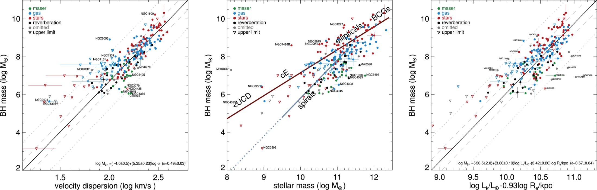
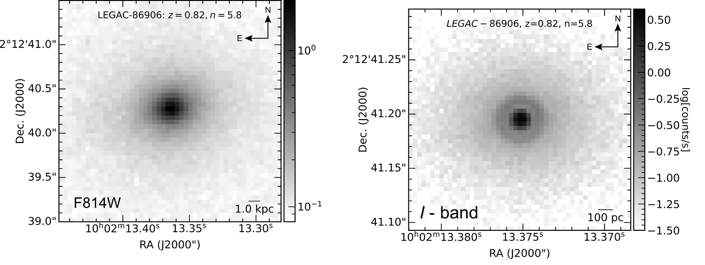

Co-evolution of Supermassive Black Holes and Their Hosts
A black hole's event horizon is roughly a billion times smaller than its host galaxy, yet the black hole's mass tracks the galaxy's stars. I use precise dynamical masses, especially in the most massive galaxies, to test how this coupling arose and whether it still holds where growth is driven by mergers and regulated by radio jets.
Black Holes That Know Their Galaxies
The modern picture began when dynamical surveys of nearby galaxies showed that black hole mass correlates tightly with the properties of the surrounding stellar bulge. Magorrian et al. (1998) found the link to bulge mass, and two years later the tight relation with stellar velocity dispersion, the $M_{\rm BH}$–$\sigma$ relation, was reported independently by Ferrarese & Merritt (2000) and Gebhardt et al. (2000). The small scatter of these relations (Fig. 1) implies that black holes and their hosts did not evolve independently.

Two broad explanations compete. In the causal picture, energy from the accreting black hole (AGN feedback) regulates the gas supply of the host: quasar-driven winds can expel gas during rapid growth, and radio jets can keep the hot gas around massive galaxies from cooling and forming stars. In the statistical picture, repeated galaxy mergers average black hole and stellar masses together, so a correlation emerges even if the two were initially unrelated. Telling them apart requires accurate black hole masses in many types of galaxies, measured together with equally careful descriptions of their hosts.
Growth at the High-Mass End
The most massive galaxies, the giant ellipticals and brightest cluster galaxies, grew late in cosmic history mainly through gas-poor (“dry”) mergers. In such mergers the black hole and stellar masses add up, but the velocity dispersion barely changes. The $M_{\rm BH}$–$\sigma$ relation may therefore saturate or steepen at the top end, and the most massive black holes, which approach 1010 M☉, lie above the standard relations (Lauer et al. 2007; McConnell et al. 2011; Thomas et al. 2016). Many of these galaxies also host radio jets, the clearest sign of the “radio-mode” feedback thought to keep them from forming new stars.
The high-mass end is where the growth mechanism changes, but it is also where measurements are hardest. These galaxies are rare and therefore distant. Their central surface brightness is often low, which makes stellar kinematics expensive to obtain. Their masses are sensitive to the adopted distance, the stellar mass model and the velocity dispersion used to place them on the relations. A black hole that seems to lie off the relation may be a genuine outlier, or the result of a biased host measurement. Separating the two is the focus of my work in this theme.
My Results: Precise Anchors for the Top of the Relations
I measure black hole masses in massive early-type galaxies with ALMA observations of cold molecular gas, which settles into regular disks and traces the central gravity cleanly, and with JWST stellar kinematics. The methods are described in Theme 01. Here I focus on what the measurements tell us about the hosts.
An isolated elliptical radio galaxy with a stellar mass of about 5.6×1011 M☉, well-defined Fanaroff–Riley type I radio jets, and a circumnuclear dust and gas disk. Its boxy outer structure suggests a history of significant mergers. My ALMA measurement agrees with the earlier value, but a more complete mass model of the host, including the molecular gas and the extended stellar mass of the outer galaxy, lowers the stellar mass-to-light ratio by 10%. The adopted distance alone (69.3 versus 46.4 Mpc) implies a systematic uncertainty of about 30% in $M_{\rm BH}$. At the high-mass end, the description of the host matters as much as the kinematics.
A massive early-type galaxy (stellar mass about 4.3×1011 M☉) in the NGC 4065 group, about 107 Mpc away, and host of a bent-tail radio source. This is the first robust dynamical mass for its black hole. It resolves a long-standing discrepancy between earlier indirect estimates and shows that the exceptionally large velocity dispersion reported in the literature is likely spurious. This is a concrete example of how an error in a host property can make a galaxy appear to be an outlier from the scaling relations.
The giant elliptical at the centre of the Virgo Cluster hosts one of the most massive nearby black holes, the first to be imaged by the Event Horizon Telescope. Its stellar- and gas-dynamical masses have historically disagreed by nearly a factor of two (Gebhardt et al. 2011; Walsh et al. 2013). With JWST/NIRSpec stellar kinematics that resolve about one-tenth of the sphere-of-influence radius, I am re-measuring its mass to anchor the very top of the local relations.
A high-precision ALMA molecular-gas measurement of the black hole in the massive elliptical NGC 2513, adding another massive early-type galaxy to the sample.
Across galaxy types
The same methods applied to spiral galaxies anchor the lower part of the relations, so that massive ellipticals can be compared with spirals on an equal footing:
| Galaxy | Host | Method | $M_{\rm BH}$ ($M_\odot$) | What it tells us |
|---|---|---|---|---|
| NGC 4736 (M94) | Spiral | JWST stars | $(1.60 \pm 0.16)\times10^7$ | Consistent with the $M_{\rm BH}$–$\sigma$ and $M_{\rm BH}$–$M_\star$ relations |
| NGC 4258 | Spiral, maser disk | JWST stars | $(4.08^{+0.19}_{-0.33})\times10^7$ | Within 5% of the maser benchmark |
| M81 | Spiral | JWST stars | $(4.78^{+0.07}_{-0.10})\times10^7$ | A reliable anchor point for the scaling relations |
| NGC 4061 | Massive ETG, group, radio | ALMA gas | $(1.17^{+0.08}_{-0.10} \pm 0.43)\times10^9$ | Literature $\sigma$ likely spurious |
| NGC 7052 | Isolated elliptical, FR I radio | ALMA gas | $(2.50 \pm 0.37 \pm 0.8)\times10^9$ | Host mass model changes $M/L$ by 10% |
Next: testing a break in the relations
Two accepted observing programmes extend this work (details). A Hubble Space Telescope Cycle 34 programme (GO 18383, 20 orbits) will test whether there is a fundamental break in the black hole–galaxy relations for the most massive black holes. An ALMA Cycle 13 programme will cross-calibrate black hole mass methods in Seyfert nuclei using atomic [C I](1–0) gas, so that masses measured with different tracers can be combined in the same relation without hidden offsets.
Towards Cosmic Noon
The local scaling relations are a snapshot of the present day. To learn whether black holes grew before, with or after their host galaxies, we need dynamical masses at earlier epochs, around redshift 1–2, when star formation and black hole accretion peaked and the most massive galaxies were shutting down star formation. Today, spatially resolved dynamical masses are limited to galaxies within about 100 Mpc.

- Black hole masses at 1 ≲ z ≲ 2. For five bright, massive, quiescent galaxies, MICADO mass models combined with HARMONI stellar kinematics recover black hole masses to about 10% (MNRAS 2026). This makes it possible to test black hole–galaxy co-evolution at the top of the galaxy mass function.
- Realistic costs. About 1 h of MICADO imaging per galaxy, and 5–7.5 h of HARMONI integration depending on brightness.
- A survey of ultramassive galaxies. I developed the observing strategy and first simulated results for an ELT integral-field survey of ultramassive galaxies (proceedings) Lead author
The simulation techniques behind these forecasts are described in Theme 04.
Summary of Findings
- New anchors at the top of the relations. Robust billion-solar-mass black holes in the radio galaxies NGC 7052 and NGC 4061, with M87 and NGC 2513 in progress.
- Host measurements can create false outliers. In NGC 4061 a spurious velocity dispersion, and in NGC 7052 an incomplete mass model and distance uncertainty, would each bias where the galaxy sits relative to the relations.
- One method across galaxy types. The same dynamical approach gives consistent masses for spirals (NGC 4736, NGC 4258, M81) and giant ellipticals, which allows a like-for-like comparison.
- A path to earlier epochs. The ELT can measure dynamical black hole masses in massive galaxies at redshift 1–2 to about 10% precision, so the relations can be tested while they were forming.
Literature Review
The scaling relations were established by Magorrian et al. (1998), Ferrarese & Merritt (2000) and Gebhardt et al. (2000), with their intrinsic scatter quantified by Gültekin et al. (2009) and the full census reviewed by Kormendy & Ho (2013). The unified compilation of van den Bosch (2016) shows that the relations behave like a fundamental plane. Feedback as the causal link was proposed by Silk & Rees (1998), built into simulations of galaxy mergers by Di Matteo, Springel & Hernquist (2005) and, in its radio mode, into semi-analytic models by Croton et al. (2006); it is reviewed by Fabian (2012). The alternative, a non-causal origin through merger averaging, was put forward by Peng (2007) and Jahnke & Macciò (2011).
At the high-mass end, Lauer et al. (2007) argued that the $M_{\rm BH}$–$\sigma$ relation underpredicts the masses of the most luminous galaxies. The discovery of 1010 M☉ black holes in brightest cluster galaxies (McConnell et al. 2011; Thomas et al. 2016) supports this. M87, a key benchmark, has stellar- and gas-dynamical masses that disagree (Gebhardt et al. 2011; Walsh et al. 2013). The Event Horizon Telescope image of its black hole shadow (EHT Collaboration 2019) provided a third, independent constraint.
Papers in This Theme
- Revisiting the Supermassive Black Hole Mass of NGC 7052 using High Spatial Resolution Molecular Gas Observed with ALMANgo, H. N., Nguyen, D. D., et al. 2025, ApJ, 992, 211doi↗
- ELT High Spatial Resolution IFS Survey of Ultramassive Galaxies: Observational Strategy and First Simulated ResultsNgo, H. N., Nguyen, D. D., Cappellari, M., & Pereira-Santaella, M., Windows on the Universe (proceedings)doi↗
- Resolving One-Tenth of the Sphere-of-Influence Radius: The M87 Supermassive Black Hole Mass from JWST/NIRSpec Stellar KinematicsNgo, H. N., Nguyen, D. D., Cappellari, M., et al., in preparation
- Dynamical Evidence for a Billion Solar-Mass Black Hole in the Galaxy NGC 4061 from ALMA $^{12}$CO(2–1) KinematicsNguyen, D. D., Nguyen, L. Q. T., Gallo, E., Ngo, H. N., et al. 2026, ApJ, 1005, 94doi↗
- Extending the Frontier of Spatially Resolved SMBH Mass Measurements to 1 < z < 2 with ELT/MICADO and HARMONINguyen, D. D., Cappellari, M., Le, T. Q. T., Ngo, H. N., et al. 2026, MNRAS, 546, 4doi↗
- The Supermassive Black Hole in the Nearby Spiral Galaxy M81: A Robust Mass from JWST/NIRSpec Stellar DynamicsNguyen, D. D., Le, T. N., Cappellari, M., Ngo, H. N., et al. 2026, ApJ, 1003, 98doi↗
- A High-Precision Mass Measurement of the Central Black Hole in the Massive Elliptical NGC 2513 with ALMA Molecular Gas DynamicsHarrisberg, S.-A., Thater, S., Nguyen, D. D., Hacar, A., & Ngo, H. N., in preparation